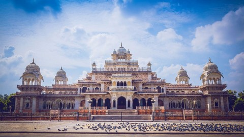
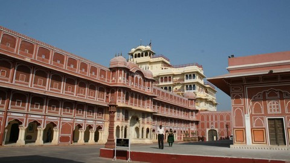
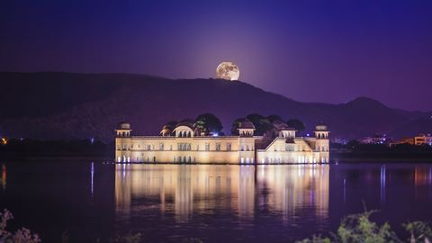
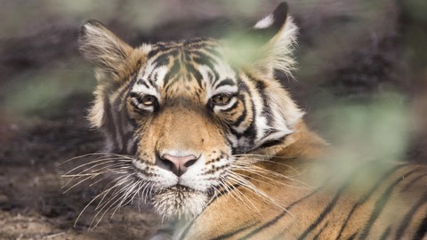
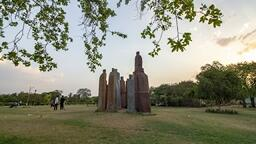

The city of palaces and forts, interspersed with historical monuments and gardens that testify the grandeur of the Rajput kings, Jaipur is the gateway to the royal heritage of India. Also called Pink City, the capital of Rajasthan, remains suspended in time, with its heritage preserved in the overwhelming Hawa Mahal that gazes down at the bustling streets of Johari Bazaar. A little away from the city centre, which is resplendent with state-of-the-art cinemas/ movie theatres, eateries, multiplexes, museums and parks, lies the arid hilly country dotted with forts that earlier stood as armoured sentinels of Jaipur. The biggest and the most awe-inspiring is the Amber Fort, which leaves one humbled with its expansive fortifications and grandeur.
|
 |
Albert Hall MuseumA magnificent building built in Indo-Saracenic architectural style, Albert Hall Museum (Central Museum) is located in Ram Nivas Garden. It draws its name from London’s Victoria and Albert Museum. Its corridors are decorated with murals reflecting various civilisations. Currently, the museum houses a diverse range of wood crafts, stone and metal sculptures, metal objects, carpets, natural stones, arms and weapons and goods made out of ivory. The museum also displays art from the Kota, Bundi, Udaipur, Kishangarh and Jaipur schools of art. |
|
 |
City PalaceLocated in the heart of old Jaipur, the City Palace is a spectacular example of the amalgamation of Rajput and Mughal architecture. This lavish palace includes the living quarters of the erstwhile royal family. The Maharaja Sawai Man Singh II Museum displays the royal family’s personal belongings like garments featuring exquisite embroideries. The Maharani’s Palace showcases one of the largest collections of weapons in the country. At Diwan-e-Khas stands two gigantic silver vessels, which are said to be the largest silver objects in the world. They were supposedly used to transport holy water from River Ganges for the royal family. |
|
 |
Jal MahalOne of the most ethereal sights in Jaipur is the architectural marvel of Jal Mahal, which is standing right at the centre of the Man Sagar Lake. It is built according to a blend of Rajput and Mughal aesthetics, with pink sandstone. The sandstone paints a vivid image against the blue backdrop of the water and the distant rolling hills. The palace is a five-storeyed building and about four storeys stay immersed when the lake is full. At night, bathed in dreamy lights, the palace seems as if it’s floating in the lake's water. In the vicinity of the palace is the gorgeous Chameli Bagh, which is a paradise for birdwatchers. |
|
 |
Ranthambore National ParkThe popular Ranthambore National Park and Tiger Reserve was once the private game reserve of the royal family of Jaipur. Ranthambore's diverse topography with a mix of rolling hills and crags, meadows, lakes and rivulets, offers some of the finest opportunities for sighting the magnificent tiger in the wild. Apart from the tiger, other wildlife in the park includes sloth bear, leopard, jackal, fox, hyena, Indian wolf, chital, sambar deer, blue bull antelope or nilgai, rhesus macaque, langur and an incredible variety of birds. The 10th century Ranthambore fort dominates the landscape of this dry-deciduous forest. |
|
 |
Central ParkCentral Park lies at the heart of Jaipur. It is one of the best retreats in the city to while away a cool day or have a picnic. Its lush green gardens invite locals and tourists alike to sprawl lazily and soak in the royal vibes of the city. The park also boasts a 5 km long jogging and walking track and visitors can get their morning exercise in this serene surrounding. One can also spot a number of migratory birds and native birds that visit the premises, thus, making the place a stopover for birdwatchers. |
Ghevar
The mouth-watering ghevar is a traditional dessert of Rajasthan. It is shaped like a disc and has a honeycomb pattern. Made with maida (refined flour) and ghee, the batter is dipped into piping hot oil and fried. Sometimes besan is also added to enhance its taste.
Gajak
Gajak is a simple yet delicious sweet dish. A thin and flaky bite-sized sweet, it is made with nutritious sesame seeds, groundnuts and jaggery, and resembles the popular chikki. This crunchy treat gives a great start to the morning and keeps one warm during winter months.
Gatte Ki Sabji
Obbattu is a local, popular street food in Bengaluru. It is one of the delicacies served piping hot with ghee during festivals. It is a rich dish and is served particularly during festivities.
Dal Bati Churma
Often called Jaipur's culinary icon, dal bati churma is a mix of dal, bati (wheat rolled into dough, either fried or baked) and churma (crushed wheat with ghee and sugar). There are a variety of ways of eating this dish but the most preferred is by dipping the bati into the dal, pouring ghee on it and then putting it into the churma.
Blue Pottery
An art form that was introduced the Mughals, objects are made from quartz and not clay. Materials that are used include raw glaze, sodium sulphate, and multani mitti. The beautiful hues of blue and turquoise are obtained through the use of copper oxide and cobalt oxide which gives it a distinctive look. There are a number of products you can purchase including plates, flower vases, soap dishes, door knobs and glazed tiles with hand painted floral designs. There are several shops in Jaipur from where you can buy these items.
Jewellery
Jaipur is a hotspot for kundan jewellery and has a history of jewellery with precious gems that can be traced back to more than two and a half centuries. Apart from kundan, Jaipur is known for the manufacture of specialised jewellery such as Minakari and processing of coloured gems. Moreover, it is a global centre of cut and polished emeralds. One can also shop for coloured gems, silver and pearls here. However, kundan remains the highlight of this royal city. Historical sources say that the art of making kundan jewellery came to Rajasthan from Delhi. Today kundan jewellery has become a choice accessory of brides.
|
|
AirJaipur has a well-connected airport with daily flights to and from Mumbai, Delhi, Ahmedabad, Kolkata, Udaipur, Jodhpur, among others. Also known as Sanganer Airport, the international terminal operates flights to and from Dubai. |
|
|
RoadJaipur can be reached via the extensive state and national highways of India. Delhi is 260 km away. Buses, AC and non-AC, ply from all major cities of Rajasthan. |
|
|
RailTrains from major Indian cities like Delhi, Mumbai, Kolkata, Chennai, Ahmedabad, Agra etc. go to Jaipur. There is also trains running between Jaipur and Udaipur, Bikaner and Jodhpur. |
|
|
Map |

.png)
.png)